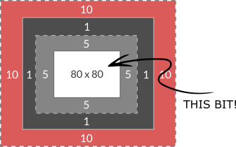

JavaScript & The Document Object Model

HTML, CSS and JavaScript - The Three Tradies
Building websites is just like building houses. There are lots of different parts involved, all of which need to work together to create a functional and attractive finished product. So while a house needs a carpenter, decorator and an electrician to get up and running, a website has its own versions of these!
HTML - The Carpenter
HTML isn't really a programming language believe it or not (neither is CSS), but rather a markup language. It's role is literally to label the content on the page and tell the browser what kind of content it is - simple! This HTML structure makes up the basic body or frame of the website. Carpenters do the same job when building a house - they lay out the basic structure and location of the various areas in the form of a frame. This frame could function as a very barebones house if required, but it doesn't really do the job by today's standards. HTML is the same; all you need for a webpage to display is an HTML document! But just by itself it will look pretty darn average (read: shit). We need some help from some other tradies!

CSS - The Interior Designer

Once our house frame is built, we need to make it cosy and suit our personal design tastes! That's where our Interior Designer - or CSS comes into play. CSS is another markup language just like HTML, but this time instead of laying out our frame and specifying what is what, we are taking the elements of our frame and specifying how we want them to look. CSS has an absolutely gigantic array of different aspects you can change on virtually any element, meaning you can decorate your webpage in literally thousands of different ways! Just like different designers can make the inside of a house look completely different, so too can different CSS styles completely change the look and feel of a website.
JavaScript - The Electrician
JavaScript is a very different beast when compared to HTML and CSS - and it is definitely a bonafide programming language. It enables users to interact with and control certain elements being displayed on a webpage, much like you could turn the lights on and off in a house. While HTML and CSS create the website and its design/layout, JavaScript brings it to life. Almost anything is possible when correctly using HTML, CSS and JavaScript together in a complementary way.

Control Flow & Loops
Control Flow
The content of the element is what goes between the HTML tags in the markup. It could be text, it could be imagery... or it could be nothing! Some very clever CSS tricks can be achieved by adding styles to empty boxes! Most elements however do have content, and it's normally the content that gets out attention first.
PADDING

Padding is the space immediately around the content. Not to be confused with Margin, increasing the amount of padding will increase the size of the element's box! This is great for allowing background colours and other styles to carry beyond the confines of the content, and can be used to great effect.
BORDER
The Border is the boundary that lies at the edge of the box, immediately after the padding. It can be styled in a variety of ways (or not at all!) to give a variety of different appearances. Some clever CSS tricks can be used with borders to add stylistic flair to otherwise boring elements.

MARGIN
Perhaps the most important of all is Margin. Margin defines the space outside the box that no other elements are allowed to enter. It can be used to position elements around a page, or stop them overlapping in some cases. From a design perspective, empty space can be just as important as content, and clever manipulation of margin can achieve this.
It sounds simple - but it's not!
It's really easy for all the padding and margin on multiple different elements to get confusing and out of hand really fast. Conflicting CSS rules can cause content to break the rules and burst out of its box. What's more confusing, different display types have different rules for whether or not they listen to padding and margin rules! Inline elements ignore vertical margin for example. Start throwing in things like Flexbox and Grid and it all gets REAL interesting!
Like most things, I guess the best way to master it is practice! Lets do this!